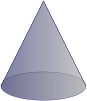

1
Consider a right circular cone.

What shape are horizontal cross-sections? Are the vertical cross-sections the same?
Consider a right circular cone.
What shape are horizontal cross-sections? Are the vertical cross-sections the same?
Two potters start with a block of clay \(h\) units tall, and identical square cookie cutters. They form columns by pushing the square cookie cutter straight down over the clay, so that its cross-section is the same square as the cookie cutter. Potter A pushes their cookie cutter down while their clay block is sitting motionless on a table; Potter B pushes their cookie cutter down while their clay block is rotating on a potter's wheel, so their column looks twisted. Which column has greater volume?
Let \(R\) be the region bounded above by the graph of \(y=f(x)\) shown below and bounded below by the \(x\)-axis, from \(x=0\) to \(x=6\text{.}\) Sketch the washers that are formed by rotating \(R\) about the \(y\)-axis. In your sketch, label all the radii in terms of \(y\text{,}\) and label the thickness.
Write down definite integrals that represent the following quantities. Do not evaluate the integrals explicitly.
Write down definite integrals that represent the following quantities. Do not evaluate the integrals explicitly.
Write down a definite integral that represents the volume of the solid obtained by rotating around the line \(y=-1\) the region between the curves \(y=x^2\) and \(y=8-x^2\text{.}\) Do not evaluate the integrals explicitly.
A tetrahedron is a three-dimensional shape with four faces, each of which is an equilateral triangle. (You might have seen this shape as a 4-sided die; think of a pyramid with a triangular base.) Using the methods from this section, calculate the volume of a tetrahedron with side-length \(\ell\text{.}\) You may assume without proof that the height of a tetrahedron with side-length \(\ell\) is \(\sqrt{\frac{2}{3}}\ell\text{.}\)
Let \(a \gt 0\) be a constant. Let \(R\) be the finite region bounded by the graph of \(y=1+\sqrt{x}e^{x^2}\text{,}\) the line \(y=1\text{,}\) and the line \(x=a\text{.}\) Using vertical slices, find the volume generated when \(R\) is rotated about the line \(y=1\text{.}\)
Find the volume of the solid generated by rotating the finite region bounded by \(y = 1/x\) and \(3x + 3y = 10\) about the \(x\)--axis.
Let \(R\) be the region inside the circle \(x^2 + (y-2)^2=1\text{.}\) Let \(S\) be the solid obtained by rotating \(R\) about the \(x\)-axis.
The region \(R\) is the portion of the first quadrant which is below the parabola \(y^2=8x\) and above the hyperbola \(y^2-x^2=15\text{.}\)
The region \(R\) is bounded by \(y=\log x\text{,}\) \(y=0\text{,}\) \(x=1\) and \(x=2\text{.}\) (Recall that we are using \(\log x\) to denote the logarithm of \(x\) with base \(e\text{.}\) In other courses it is often denoted \(\ln x\text{.}\))
The finite region between the curves \(y = \cos(\frac x2)\) and \(y = x^2 - \pi^2\) is rotated about the line \(y=-{\pi^2}\text{.}\) Using vertical slices (disks and/or washers), find the volume of the resulting solid.
The solid \(V\) is 2 meters high and has square horizontal cross sections. The length of the side of the square cross section at height \(x\) meters above the base is \(\frac{2}{1+x}\) m. Find the volume of this solid.
Consider a solid whose base is the finite portion of the \(xy\)--plane bounded by the curves \(y=x^2\) and \(y=8-x^2\text{.}\) The cross--sections perpendicular to the \(x\)--axis are squares with one side in the \(xy\)--plane. Compute the volume of this solid.
A frustrum of a right circular cone (as shown below) has height \(h\text{.}\) Its base is a circular disc with radius \(4\) and its top is a circular disc with radius \(2\text{.}\) Calculate the volume of the frustrum.
The shape of the earth is often approximated by an oblate spheroid, rather than a sphere. An oblate spheroid is formed by rotating an ellipse about its minor axis (its shortest diameter).
Let \(R\) be the bounded region that lies between the curve \(y = 4 - (x - 1)^2\) and the line \(y = x + 1\text{.}\)
Let \(\cR=\big\{(x,y)\ :\ (x-1)^2+y^2\le 1\text{ and } x^2+(y-1)^2\le 1\ \big\}\text{.}\)
Let \(\cR\) be the plane region bounded by \(x=0,\ x=1,\ y=0\) and \(y=c\sqrt{1+x^2}\text{,}\) where \(c\ge 0\) is a constant.
The graph below shows the region between \(y = 4 + \pi \sin x\) and \(y = 4 + 2\pi - 2x\text{.}\)
The region is rotated about the line \(y = -1\text{.}\) Express in terms of definite integrals the volume of the resulting solid. Do not evaluate the integrals.
On a particular, highly homogeneous 13 This is clearly a simplified model: air density changes all the time, and depends on lots of complicated factors aside from altitude. However, the equation we're using is not so far off from an idealized model of the earth's atmosphere, taken from Pressure and the Gas Laws by H.P. Schmid, accessed 3 July 2017. planet, we observe that the density of the atmosphere \(h\) kilometres above the surface is given by the equation \(\rho(h) = c2^{-h/6}\quad \frac{\mathrm{kg}}{\mathrm{m^3}}\text{,}\) where \(c\) is the density on the planet's surface.